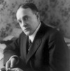

Daha sonra Amerika’nın en tanınmış rahibi olacak olan Billy Sunday (1862–1935) bir yetimdi. Amerika’daki yüzlerce şehirde vaazlar verdi. Güçlü sesi ve halka hitap eden vaazları ile ünlenmişti. Büyük bir enerjisi vardı. Aynı anda hem bir gelenekçi (çok katı bir muhafazakardı) hem de kitle iletişim araçlarını yaygın bir biçimde kullanarak köktenci evanjelik Billy Graham (1918–) gibi isimlerin önünü açan bir yenilikçiydi.

William Ashley Sunday, İç Savaş sırasında Iowa eyaletindeki Awes’ta doğdu. Bir Birlik askeri olan babası oğlunun doğumundan birkaç hafta sonra öldü. Annesi oğlunu yetimhaneye bırakmak zorunda kaldı.
Yetimhanede ilk kez ünleneceği beyzbol alanında yeteneğini sergiledi. Hızlı koşuyordu. Keşfedilmesinin ardından profesyonel olarak Chicago White Stockings, Pittsburgh Alleghenys ve Philadelphia Phillies gibi takımlarda oynadı.
1891 yılında beyzbolu bıraktıktan sonra rahipliğe başladı. 1896’dan itibaren Orta Batı’yı trenle dolaşarak vaazlar verdi. Bir beyzbolcu olarak sahip olduğu ününü vaazlarına dinleyici çekmek için kullandı. Ziyaret ettiği şehirlerdeki amatör oyunlara zaman zaman hakemlik yaptı.
Vaazlarında içki, evrim ve dans karşıtı mesajlar verdi. Bir Presbiteryen olmasına rağmen mezhepler arası bir söylem kullanıyordu. Bu sayede takipçilerinin sayısı arttırmıştı. Eşi Nell Thompson Sunday (1868–1957) sayesinde milyon dolarlarlık bağışlar toplamaya başlamıştı.
Popülaritesinin doruğuna büyük ölçüde desteklediği I. Dünya Savaşı sırasında ulaştı. Tanınırlığı sayesinde 1919 yılında alkol yasağını getiren 18. anayasa değişikliğinin kabul edilmesinde büyük rol oynadı. Ancak oğullarının adlarının karıştığı skandallar ününe leke sürdü. Yetmiş iki yaşında öldüğü sırada etkisini büyük ölçüde kaybetmişti.
Ek Bilgiler
1- Sunday beyzbol lig tarihinin en iyi kale çalıcıları arasında yer almaktadır.
2- Sunday’in üç oğlu da babalarının ününü zedeleyen seks skandallarına karıştılar. Büyük oğlu George 1933 yılında intihar etti.
3- Toplantılarına 1896 yılında başlamış olmasına rağmen 1903 yılına kadar resmen rahip değildi.